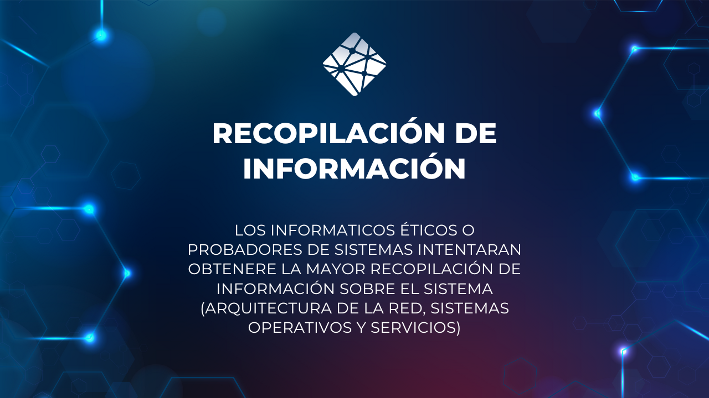
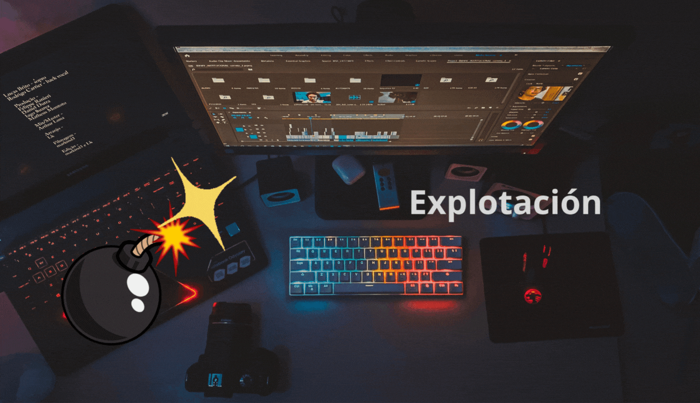

💗
💗
1. Recopilación de información
2. Analisis de vulnerabilidades

El objetivo de> esta fase es encontrar el origen y la causa de la vulnerabilidad. Para ello se hace un escaner del sistema para ver posibles entradas de ataques informáticos.
La explotación es una fase en la que se aprovechan las vulnerabilidades del sistema para infiltrarse en él. Durante esta etapa no se efectúan tareas maliciosas.

La fase de postexplotación incluye técnicas de escalada de privilegios, establecimiento de persistencia y ejecución de payloads.

La elaboración de un informe de seguridad es una de las fases de un test de intrusión más importantes y esenciales, ya que el hacking no sería ético si no se reportan las fallas de seguridad encontradas.